Síguenos y sigue conectado
Juego pausado · ¿Qué está pasando aquí?
Un relevo no es un reemplazo.
- Barra izquierda: la generación joven, energía y mirada fresca.
- Barra derecha: la experiencia, estructura y criterio.
- El birrete: la visión compartida, la formación que el Fórum pone a circular.
- Si nadie la recibe, la visión se rompe… pero vuelve a armarse. El relevo siempre puede empezar de nuevo.